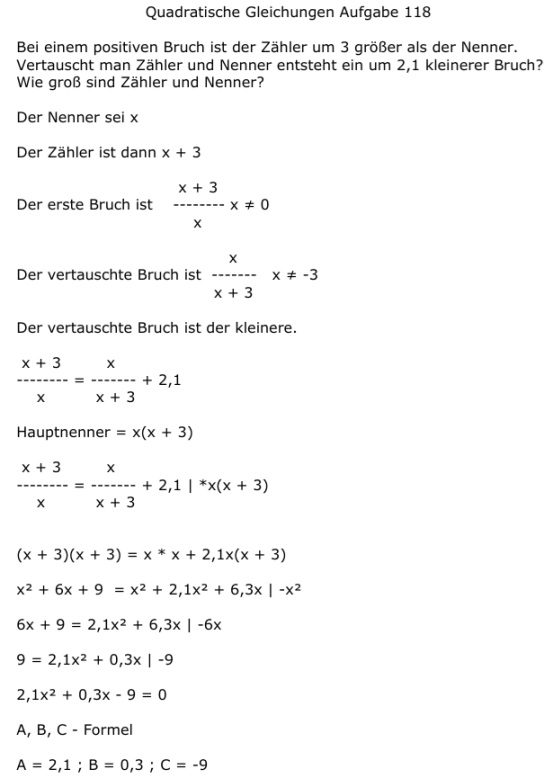

Aufgabe 118 Bei einem positiven Bruch ist der Zähler um 3 größer als der Nenner. Vertauscht man Zähler und Nenner entsteht ein um 2,1 kleinerer Bruch? Wie groß sind Zähler Z und Nenner N? Der Nenner sei x Der Zähler ist dann x + 3 x + 3 Der erste Bruch ist -------- x ≠ 0 x x Der vertauschte Bruch ist ------- x ≠ -3 x + 3 Der vertauschte Bruch ist der kleinere. x + 3 x ------- = ------- + 2,1 x x + 3 Hauptnenner = x(x + 3) x + 3 x ------- = ------- + 2,1 |*x(x + 3) x x + 3 (x + 3)(x + 3) = x * x + 2,1x(x + 3) x2 + 6x + 9 = x2 + 2,1x2 + 6,3x |-x2 6x + 9 = 2,1x2 + 6,3x |-6x 9 = 2,1x2 + 0,3x |-9 2,1x2 + 0,3x - 9 = 0 A, B, C - Formel A = 2,1 ; B = 0,3 ; C = -9  -0,3 ± 8,7 x1,2 = ------------ 4,2 -0,3 + 8,7 8,4 x1 = ------------- = ------ = 2 = N 4,2 4,2 -0,3 - 8,7 9 x2 = ------------- = - ----- 4,2 4,2 keine Lösung, gesucht ist ein positiver Bruch Z = x + 3 = 5